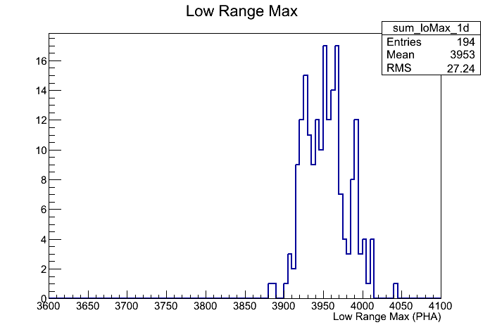
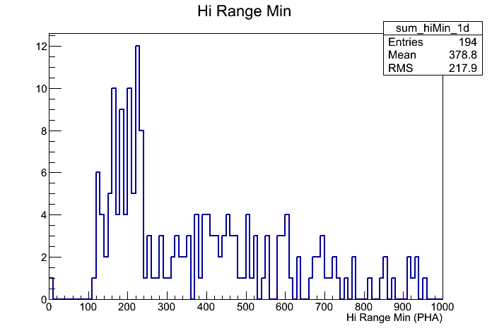
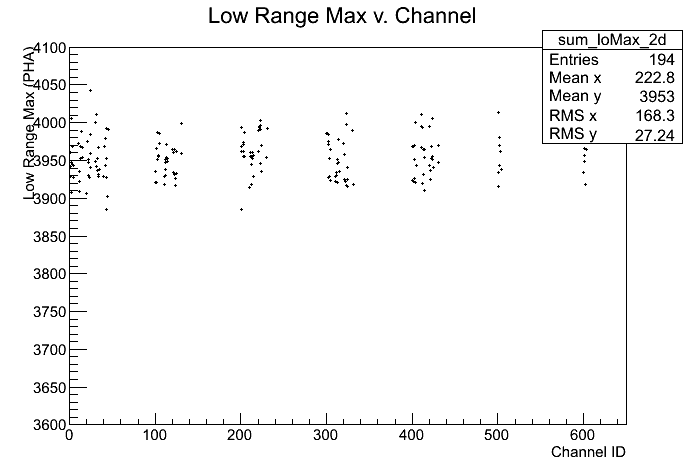
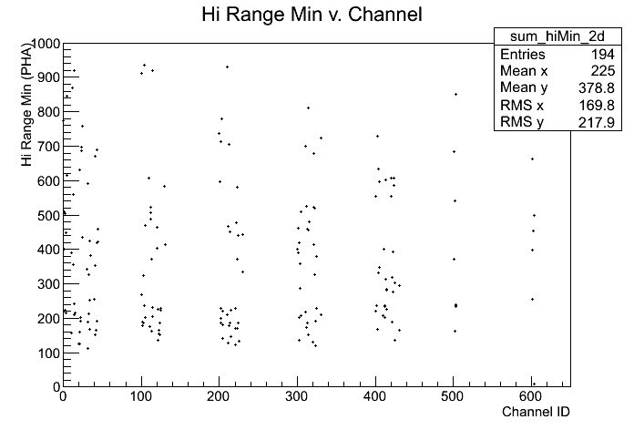
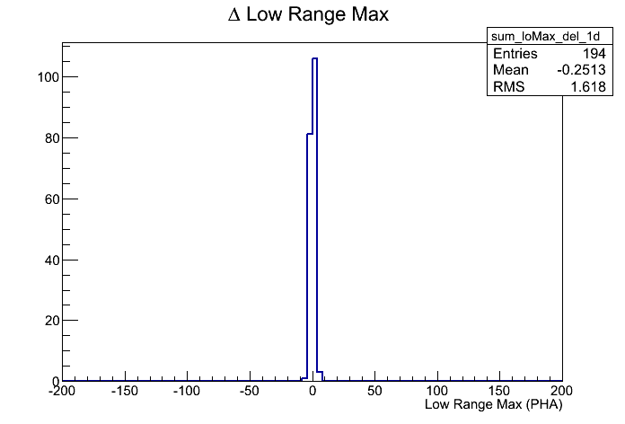
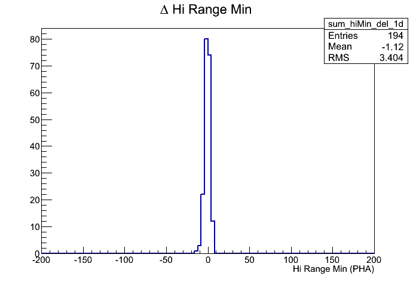
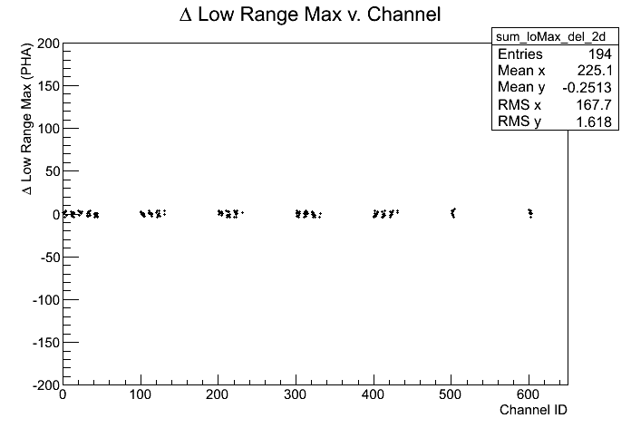
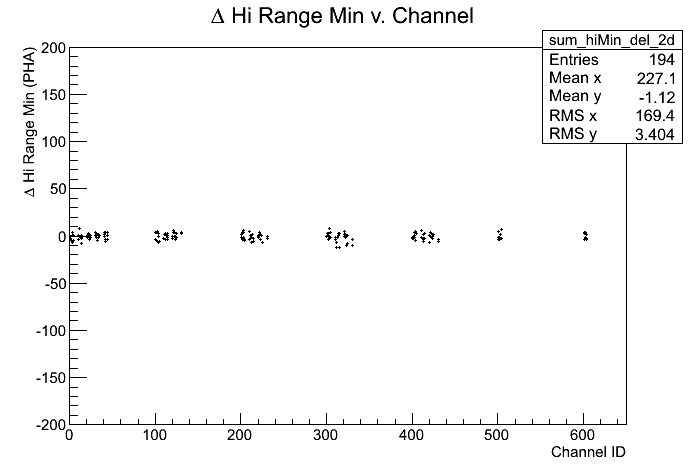

ACD_Range Calibration r0729383941_range
Input:
Files:
Time Span (MET seconds): 729383944.6773 - 729409455.0866
Triggers used: 9700931
Use History
- stored at Wed Jun 24 19:08:30 2026
Output:
Summary Plots




Plots with respect to reference calibration




Reference Calibration
/sdf/group/fermi/ground/releases/monitor/ACD/FLIGHT/Range/081208/r0250381744_range.xml
Files:
Time Span (MET seconds): 250381746.9232 - 250410431.0866
Triggers used: 7575775
Comments
- Report made at 2026-06-25 02:03:07 UTC by user abhishek
- Data from Mission week 818